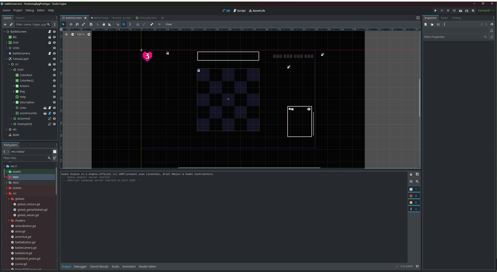
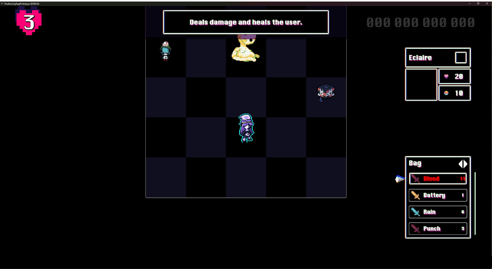
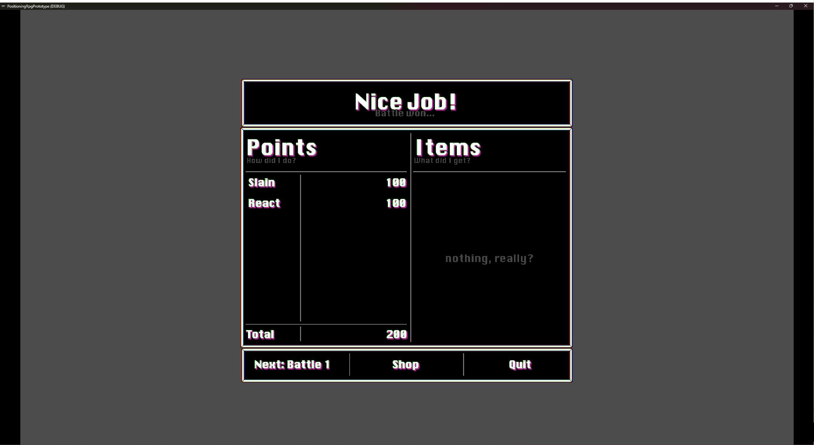
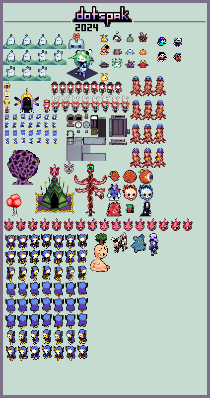

Cole Smith-Evans - cl998110@dal.ca - Halifax, NS
About
Welcome to my game development portfolio. This portfolio contains videos and screenshots of my previous projects. I have been seriously developing games for around 4 years now but have been experimenting with it for many years prior. I primarily develop turn-based rpgs with some sort of twist, but I have developed games in other genres before, notably my school project being a platformer.
I unfortunately can't include a downloadable version of my school project due to lack of permissions; however, a link to my current project's github has been included with a prototype of my current project. This project is still very early in development and has a few crashes/visual bugs to iron out, but it is playable. More details for that game are in the how to play section.
Current Project
-
I'm currently working on a grid-based RPG with a simple, yet highly dynamic battle system. The game will also feature heavy randomization similar to randomizers for games like The Legend of Zelda Ocarina of Time. Currently, the game is in a prototype phase and only features the battle system.
The games battle system will work as so: every playable character has 10 BP max. As long as they have BP to use skills, they can keep taking turns. The player can regain BP through one of two options:
- Ending the turn
- Using a red skill that costs HP
Playable characters who die will be knocked out for 3 turns (which in this case is whenever they normally would have acted). Waiting the turn count out is the only way to bring them back. This system was designed to make death feel more punishing, since death often feels like a simple status effect to deal with in other RPGs.
This game will be fairly easy to pick up and learn, but will have a high skill ceiling for players how wish to master the system and venture into the hardest difficulties. Despite it's nature of being easy to learn, the game is planned to be fairly challenging, and the player will not be able to mindlessly play through the game and achieve success.
So far with this project, I've had to deal with a few major challenges:
-
Dealing with enemy pathfinding AI, which required determining who was the closest
playable character and moving towards them -
Dealing with enemy skill hit detection, which required an efficient way to check
all the enemy's skills each turn and all their orientations - Various math problems for calculating damage and other values
There isn't a playable build on my github page yet unfortunately, but I have included a link to check it out regardless.
-
Github Link
https://github.com/dotspak/PositioningRpgPrototype.git
Videos
-
Grid-Based RPG Demo 1
A clip from my current project with a fight between one enemy. Clips of this game show off some of the shader work I've done, namely the outline effect on the current unit's turn, the unit's breathing/floating effects, and the effects on the cursor.
-
Grid-Based RPG Demo 2
A clip from my current project with a fight between multiple enemies. This video shows how my projects are scalable, and designed with various outcomes in mind. It also shows how enemies can hurt each other with their skills!
-
Cave Generator Demo
This is a video from a small cave generation experiment I worked on. It features randomly generated caves and dynamic 2D lighting.
-
School Project Boat Level
A clip from my school project's boat level. I mostly worked on the visual effects for the level, including the water scrolling, and a shader that dynamically colours the fish.
-
School Project Spirit Level
This is a level I worked on by myself for my school project. I unfortunately ran out of time in the class to polish the level, so the level is still in an early state.
Screenshots
-
Editor Envirnoment
 -
Game in Action
 -
Victory Screen
 -
Basic Design Docs
Pixel Art Portfolio
-
My portfolio showing some of the pixel art I've done in the past.
